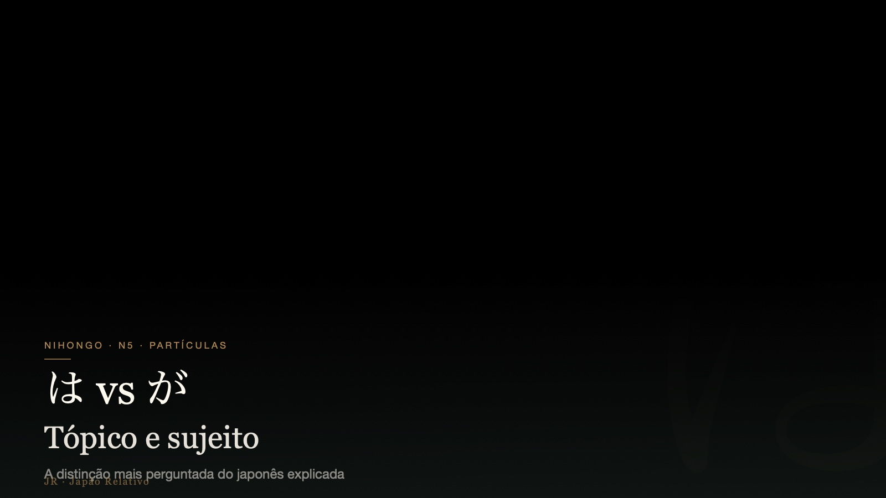

これ, それ, あれ e どれ são palavras básicas, mas muito poderosas. Elas permitem apontar, perguntar e comprar mesmo quando você ainda não sabe o nome exato do objeto.

A diferença
- これ
Kore.
Isto aqui, perto de mim. - それ
Sore.
Isso aí, perto de você. - あれ
Are.
Aquilo lá, longe de nós dois. - どれ
Dore.
Qual?
Frases úteis
- これはいくらですか。
Kore wa ikura desu ka.
Quanto custa isto? - それをお願いします。
Sore o onegai shimasu.
Esse aí, por favor. - どれがいいですか。
Dore ga ii desu ka.
Qual é melhor?
Erro comum
Não tente traduzir sempre por este/esse daquele jeito rígido do português. Pense em distância: perto de mim, perto de você, longe dos dois.